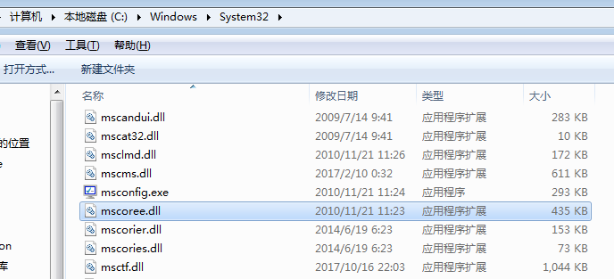
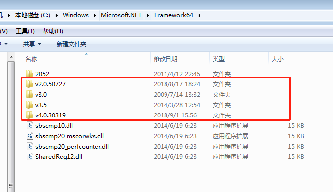
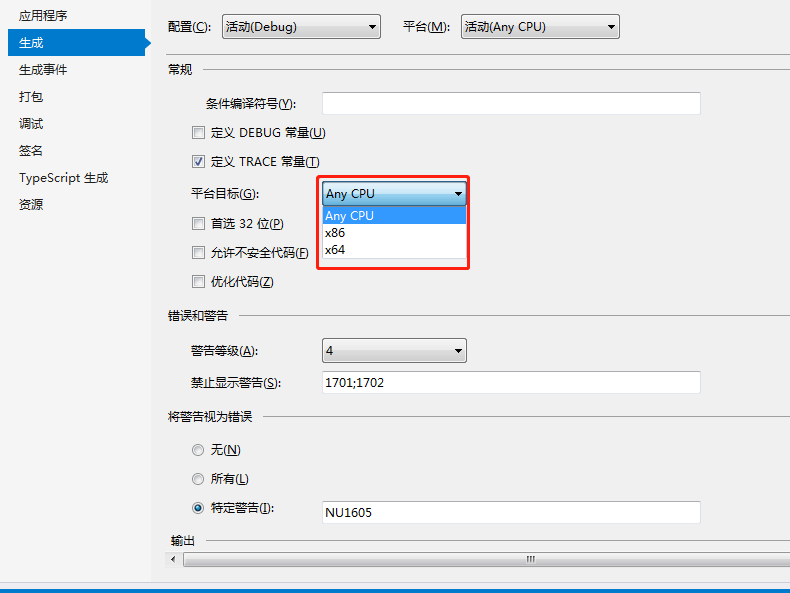

将源代码编译成托管模块
公共语言运行时CLR
公共语言运行时（Common Language Runtime，CLR）是一个可由多种编程语言使用的运行时。CLR的核心功能（比如内存管理、程序集加载、安全性、异常处理和线程同步）可由面向CLR的所有语言使用。
微软创建好了几个面向CLR的语言编译器，其中包括：C++/CLI、C#、Visual Basic、F#、Iron Python、Iron Ruby以及一个“中间语言”（Intermediate Language，IL）汇编器。
可用支持CLR的任何语言创建源代码文件，然后用对应的编译器检查语法和分析源代码。无论选择哪个编译器，结果都是托管模块（managed module）。托管模块是标准的32位Microsoft Windows可移植执行体（PE32）文件，或者是标准的64位Windows可移植执行体（PE32+）文件，它们都需要CLR才能执行。PS：托管程序集总是利用Windows的数据执行保护和地址空间布局随机化，这两个功能旨在增强整个系统的安全性。
托管模块
托管模块的组成：
- PE32或PE32+头：标准的Windows PE文件头，类似于“公共对象文件格式”头。这个头还标识了文件类型，包括GUI，CUI或者DLL，并包含一个时间标记来指出文件的生成时间。如果是包含本机CPU代码的模块，这个头包含与本机CPU代码有关的信息。
- CLR头：包含使这个模块称为托管模块的信息（可由CLR和一些实用程序进行解释）。头中包含要求的CLR版本，一些标志，托管模块入口方法（Main方法）的MethodDef元数据token以及模块的元数据、资源、强名称、一些标志及其他不太重要的数据项的位置/大小。
- 元数据：每个托管模块都包含元数据表。主要有两种表，一种表描述源代码中定义的类型和成员，另一种描述源代码引用的类型和成员。
- IL（中间语言）代码：编译器编译源代码时生成的代码。在运行时，CLR将IL编译成本机CPU指令。
IL代码有时称为托管代码（managed code），因为CLR管理它的执行。
元数据是一些老技术的超级，包括COM的“类型库”和“接口定义语言”IDL文件，元素据总是与包含IL代码的文件关联。
C++编译器比较特殊，既可以生成非托管代码的EXE/DLL模块，也能生成包含托管代码的模块。
个人总结
- CLR是一个可以多种编程语言使用的“运行时”。
- CLR的功能包括：内存管理、程序集加载、安全性、异常处理和线程同步。
- C#源代码通过面向CLR的编译器（C#编译器）编译，生成托管模块（本质是标准的32/64位可移植执行体文件），包含中间语言IL（又称为托管代码）和元数据。
- 通过CLR编译器生成的IL，称为托管代码。托管代码需要CLR管理它的执行。在运行时，CLR将IL编译成本机CPU指令。
- 本机代码编译器生成的面向特定CPU架构的代码称为非托管代码。C++既可以写托管代码也可以写非托管代码。
将托管模块合并成程序集
程序集
CLR实际不和模块工作，它和程序集工作。
程序集（assembly）是抽象概念，它是一个或多个模块/资源的逻辑性分组。在CLR中，程序集相当于“组件”。
编译器默认将生成的托管模块转换成程序集。也就是说，C#编译器生成的是含有清单的托管模块。清单指出程序集只由一个文件构成。所以，对于只有一个托管模块而且无资源文件的项目，程序集就是托管模块，生成过程无需执行任何额外的步骤。
在程序集的模块中，还包含与引用的程序集有关的信息（包括它们的版本号）。这些信息使程序集能够自描述。也就是说，CLR能判断为了执行程序集中的代码，程序集的直接依赖对象是什么。不需要在注册表或Active Directory Domain Services（ADDS）中保存额外的信息。由于无需额外的信息，所以和非托管组件相比，程序集更容易部署。
加载公共语言运行时
生成的每个程序集既可以是可执行应用程序，也可以是DLL（其中含有一组由可执行程序使用的类型）。最终是由CLR管理这些程序集中的代码的执行。
判断是否安装.NET Framework
要知道是否已安装.NET Framework，只需要检查%SystemRoot%\System32目录中的MSCorEE.dll文件。若存在该文件，表明.NET Framework已安装。

然而，一台机器可能同时安装好几个版本的.NET Framework。要了解安装了哪些版本的.NET Framework，需要检查这两个目录的子目录：%SystemRoot%\Microsoft.NET\Framework和%SystemRoot%\Microsoft.NET\Framework64。

Windows版本和目标平台
极少数情况下，开发人员希望代码只在一个特定版本的Windows上运行。例如，要使用不安全的代码，或者要和面向一种特定CPU架构的非托管代码进行互操作，就需要一些其他操作。
C#编译器提供了一个/platform命令行开关选项。它允许指定最终生成的程序集只能在运行32位Windows版本的x86机器上使用，只能在运行64位Windows的x64机器上使用，或者只能在运行32位Windows RT的ARM机器上使用。
不指定具体平台的话，默认选项就是anycpu，表明最终生成的程序集能在任何版本的Windows上运行。Visual Studio用户要想设置目标平台，可以打开项目的属性页，从“生成”选项卡的“目标平台”列表中选择一个选项。

取决于/platform开关选项，C#编译器生成的程序集包含的要么是PE32头，要么是PE32+头。
可执行文件运行时，Windows检查文件头。判断需要32位还是64位地址空间。PE32文件在32位或64位地址空间中均可运行，PE32+文件则需要64位地址空间。Windows还会检查头中嵌入的CPU架构信息，确保当前计算机的CPU符合要求。最后，Windows的64位版本通过WoW64技术运行32位Windows应用程序。
| /platform开关 | 生成的托管模块 | x86 Windows | x64 Windows | ARM Windows RT |
|---|---|---|---|---|
| anycpu（默认） | PE32/任意CPU架构 | 作为32位应用程序运行 | 作为64位应用程序运行 | 作为32位应用程序运行 |
| anycpu32bitpreferred | PE32/任意CPU架构 | 作为32位应用程序运行 | 作为WoW64应用程序运行 | 作为32位应用程序运行 |
| x86 | PE32/x86 | 作为32位应用程序运行 | 作为WoW64应用程序运行 | 不运行 |
| x64 | PE32+/x64 | 不运行 | 作为64位应用程序运行 | 不运行 |
| ARM | PE32/ARM | 不运行 | 不运行 | 作为32位应用程序运行 |
Windows检查EXE文件头，决定是创建32位还是64位进程之后，会在进程地址空间加载MSCorEE.dll的x86，x64或ARM版本。
- 如果是Windows的x86或ARM版本，MSCorEE.dll的x86版本在%SystemRoot%\System32目录中。
- 如果是Windows的x64版本，MSCorEE.dll的x86版本在%SystemRoot%\SysWoW64目录中，64位版本则在%SystemRoot%\System32目录中（为了向后兼容）。
然后，进程的主线程调用MSCorEE.dll中定义的一个方法。这个方法初始化CLR，加载EXE程序集，再调用其入口方法Main。随即，托管应用程序启动并运行。
Tips：可在代码中查询Environment的Is64BitOperatingSystem属性，判断是否在64位Windows上运行。还可查询Environment的Is64BitProcess属性，判断是否在64位地址空间中运行。
执行程序集的代码
托管程序集同时包含元数据和IL。IL是与CPU无关的机器语言，比大多数CPU机器语言都高级。IL能访问和操作对象类型，并提供了指令来创建和初始化对象。调用对象上的虚方法以及直接操作数组元素。甚至提供了抛出和捕获异常的指令来实现错误处理。可将IL视为一种面向对象的机器语言。
注意：高级语言通常只公开了CLR全部功能的一个子集。然而，IL汇编语言允许开发人员访问CLR的全部功能。所以，如果你选择的编程语言隐藏了你迫切需要的一个CLR功能，可以换用IL汇编语言或者提供了所需功能的另一种编程语言来写那部分代码。
Tips：允许在不同编程语言之间方便的切换，同时又保持紧密集成，这是CLR的一个很出众的特点。
JIT即时编译器
为了执行方法，首先必须把方法的IL转换成本机CPU指令。这是CLRJIT（just-in-time或者“即时”）编译器的职责。
在一个方法首次调用时：
static void Main() { |
就在Main方法执行之前，CLR会检测出Main的代码引用的所有类型。这导致CLR分配一个内部数据结构来管理对引用的访问。代码中的Main方法引用了一个Console类型，导致CLR分配一个内部结构。在这个内部数据结构中，Console类型定义的每个方法都有一个对应的记录项。每个记录项都含有一个地址，根据此地址即可找到方法的实现。对这个结构初始化时，CLR将每个记录项都设置成包含在CLR内部的一个未编档的函数，即JITCompiler。
Main方法首次调用WriteLine时，JITCompiler函数会被调用。JITCompiler函数负责将方法的IL代码编译成本机CPU指令。由于IL是即时编译的，所以通常将CLR的这个组件称为JITter或者JIT编译器。
注意：如果应用程序在Windows的x86版本或WoW64中运行，JIT编译器将生成x86指令。作为64位应用程序在Windows的x64版本中运行，将生成x64指令。在Windows的ARM版本中运行，将生成ARM指令。
第一次调用
JITCompiler函数被调用时，它知道要调用的是哪个方法，以及具体是什么类型定义了该方法。然后，JITCompiler会在定义程序集的元数据中查找被调用方法的IL。接着，JITCompiler验证IL代码，并将IL代码编译成本机CPU指令。本机CPU指令保存到动态分配的内存块中。然后，JITCompiler回到CLR为类型创建的内部数据结构，找到与被调用方法对应的那条记录，修改最初对JITCompiler的引用，使其指向内存块（其中包含了刚才编译好的本机CPU指令）的地址。最后JITCompiler函数跳转到内存块中的代码。这些代码正式WriteLine方法的具体实现。代码执行完毕并返回时，会回到Main中的代码，并像往常一样继续执行。
第二次调用
现在，Main要第二次调用WriteLine。这一次，由于已对WriteLine的代码进行了验证和编译，所以会直接执行内存块中的代码，完全跳过JITCompiler函数。WriteLine方法执行完毕后，会再次回到Main。
方法仅在首次调用时才会有一些性能损失。以后对该方法的所有调用都以本机代码形式全速运行，无需重新验证IL并把它编译成本机代码。
代码优化
CLR的JIT编译器会对本机代码进行优化，这类似于非托管C++编译器的后端所做的事情。同样，可能花较多时间生成优化代码。但和没有优化时相比，代码优化性能更加。
两个C#编译器开关会影响代码优化：/optimize和/debug。
| 编译器开关设置 | C#IL代码质量 | JIT本机代码质量 |
|---|---|---|
| /optimize- /debug-(默认) | 未优化 | 有优化 |
| /optimize- /debug(+/full/pdbonly) | 未优化 | 未优化 |
| /optimize+ /debug(-/+full/pdbonly) | 有优化 | 有优化 |
- 使用/optimize-，在C#编译器生成的未优化IL代码中，将包含许多NOP（no-operation，空操作）指令，还包含许多跳转到下一行代码的分支指令。Visual Studio利用这些指令在调试期间提供“编辑并继续”功能。另外，利用这些额外的指令，还可以控制流程指令（比如for，while，do，if，else，try，catch和finally语句块）上设置断点，使代码更容易调试。相反，如果生成优化的IL代码，C#编译器会删除多余的NOP和分支指令。而在控制流程被优化之后，代码就难以在调试器中进行单步调试了。另外，若在调试器中执行，一些函数求值可能无法进行。不过，优化的IL代码变得更小，结果EXE/DLL文件也更小。
- 只有指定/debug(+/full/pdbonly)开关，编译器才会生出Program Database(PDB)文件。PDB文件帮助调试器查找局部变量并将IL指令映射到源代码。/debug:full开关告诉JIT编译器你打算调试程序集，JIT编译器会记录每条IL指令所生成的本机代码。这样一来，就可以利用VS的“即时”调试功能，将调试器连接到正在运行的进程，并方便地对源代码进行调试。不指定/debug:full开关，JIT编译器默认不记录IL与本机代码的联系，这使JIT编译器运行得稍快，用的内存也稍少。如果进程用VS调试器启动，会强迫JIT编译器记录IL与本机代码的联系（无论/debug开关的设置是什么），除非在VS中关闭了“在模块加载时取消JIT优化（仅限托管）选项”。
- 在Visual Studio中新建C#项目时，项目的“调试”配置指定的是/optimize-和/debug:full开关，而“发布”配置指定的是/optimize+和/debug:pdbonly开关。
IL和验证
- IL基于栈。并且IL指令是“无类型”的。
- IL最大的优势不是它对底层CPU的抽象，而是应用程序的健壮性和安全性。将IL编译成本机CPU指令时，CLR执行一个名为验证的过程。这个过程会检查高级IL代码，确定代码所做的一切都是安全的。托管模块的元数据包含验证过程要用到的所有方法及类型信息。
- 健壮性主要描述系统对于参数变化的不敏感性，而可靠性主要描述系统的正确性。
- CLR提供了一个操作系统进程中执行多个托管应用程序的能力。每个托管应用程序都在一个AppDomain中执行。
不安全的代码
Microsoft的C#编译器默认生成安全代码，然而也允许开发人员写不安全的代码。不安全的代码允许直接操作内存地址，并可操作这些地址处的字节。